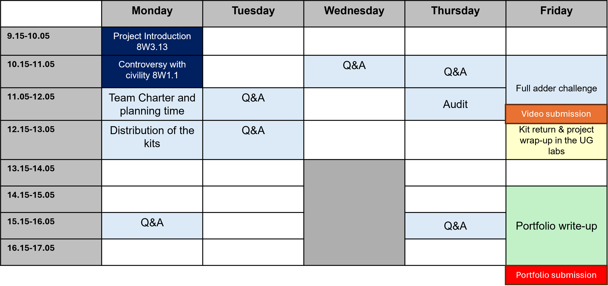

Engineering design for circular economy
Application 組／模板過關提示：三題都要答滿；R 與「技術手段」要一一對應，不要只列名詞。
01 · Project brief
本週教你電晶體在現代科技中的原理與用途，並把量測與電路成果整理成面向非技術觀眾的簡報。同時練習專案管理、循環經濟與溝通技能。
理解 BJT 與 MOSFET 如何運作，能用白話向非技術觀眾解釋結構與應用。
實驗或模擬量測曲線，算出關鍵參數（如 ON/OFF ratio、transconductance），並解釋為何對數位系統重要。
實作 NOT／AND／OR／XOR，驗證真值表，並連結回輸出特性為何讓邏輯可靠。
用 XOR＋AND 做 half adder；週五與另一組串成 full adder，可嘗試 4-bit。
最終產出：把所學、所做、所量全部納入簡報，對象是非技術觀眾。另有個人 3 分鐘影片、QMS 稽核、kit 歸還等硬性節點。
每組 5–6 人，共 16 組（Moodle 可見分組）。
整週進行（Week 6）。關鍵節點見下方時程。
02 · Timeline
把「什麼時候必須完成什麼」釘死，再回頭排 GANTT 與 critical path。

領取材料；週五最終任務用料也會在本週發放。
帶著可運作的 half adder，與另一組合出 full adder。
說明電晶體結構、特性與應用給非技術觀眾。技能頁亦寫「星期四結束前」——以課程正式截止為準，建議週四晚上前上傳。
歸還所有零件；團隊反思與回饋。
03 · Skills (Application)
全部為 Application 等級。官方要求「Follow the template provided」——在 Mahara 模板對應欄位作答。下方依課程頁原文整理成可勾選清單（繁中說明 + 英文技能名）。獨立清單頁：skills-checklist.html。
截止提醒（里程碑頁原文）：個人 3 分鐘影片須於星期四結束前繳交 Moodle（時間表亦標 Friday 12:00——以 Moodle「周四結束前」為準，建議周四晚前上傳）。QMS Audit：周四 11:15，被點名文件須 30 秒內找到。
過關提示：三題都要答滿；R 與「技術手段」要一一對應，不要只列名詞。
過關提示：技術內容要翻成病人聽得懂的話；Mahara 放影片＋符合模板，Moodle 也要交。
過關提示：簽名與 matrix 缺一不可；兩段個人文字／影音分開寫，勿抄組員。
過關提示：七欄都填；Objectives 要看得出 SMART；例子中的賽道／滑鼠請換成電晶體週實際交付。
過關提示：沒有「上色的 critical path」與「三大風險短文」很容易被視為未完成。
可交主檔：打開 qms/Operations/PW1_TM_SUBMIT.html（黃色欄可改組員／風險 → 列印 PDF／截 GANTT）。教學頁：零基礎說明。附檔：Mahara 貼文、任務 CSV、怎麼改怎麼交。
過關提示：樹對＋找得快比「寫很長」更重要；Gallery 必須完整；CI 與 Git 證據常被漏交。
04 · Lab Task 1
研究並簡報 BJT 與 MOSFET。禁止未解釋的術語與縮寫。
導體電流幾乎「一直通」；半導體的導電能力可以被刻意調控——這才讓開關與放大成為可能。
簡報提示：用比喻（水龍頭／閘門）講「小訊號控大電流／電場開通道」，再接到日常裝置（手機、電腦）裡成千上萬顆開關。
05 · Lab Task 2
實驗或模擬皆可。先看 datasheet，確認腳位與最大電壓／電流。BJT 用 Common Emitter。
量 IB vs VBE。矽管建議用足夠大的 VCE（教材示例約 5–10 V 量級，以腳本為準）讓 BC 接面維持合適偏壓。
固定 VGS（例：先調到約 4 V 相關條件），掃 VDS：電流變恆定前每 0.2 V，之後每 1 V 至約 15 V。至少 3 組 VGS。
固定 VDS，掃 VGS；畫 ID–VGS（多條 VDS）。
簡報怎麼說人話：這些曲線告訴我們「多大力氣才能打開開關、打開後電流多穩、開關有多乾淨」。邏輯閘與電腦都建立在「可靠的 0／1」之上。
06 · Lab Task 3
邏輯閘：若干輸入 → 依規則給輸出。請實作並驗證真值表；思考為何這種接法需要「好的」輸出特性。
輸入 0→輸出 1；反之亦然。數位系統的基本「翻轉」。
全部輸入為 1 才輸出 1。
任一輸入為 1 即輸出 1。
輸入相異為 1；相同為 0——半加器的 Sum。
按鈕當輸入、LED 當輸出，逐列核對真值表。
07 · Lab Task 4
電腦用二進位加法。Half adder 加兩位元；Full adder 加三位元（含進位），可串成多位元加法器。
| A | B | Carry | Sum |
|---|---|---|---|
| 0 | 0 | 0 | 0 |
| 0 | 1 | 0 | 1 |
| 1 | 0 | 0 | 1 |
| 1 | 1 | 1 | 0 |
Sum = XOR(A,B)；Carry = AND(A,B)。教材電晶體級電路可能用較多顆電晶體以改善訊號還原與可靠度。
| A | B | Cin | Carry | Sum |
|---|---|---|---|---|
| 0 | 0 | 0 | 0 | 0 |
| 1 | 0 | 0 | 0 | 1 |
| 0 | 1 | 0 | 0 | 1 |
| 1 | 1 | 0 | 1 | 0 |
| 0 | 0 | 1 | 0 | 1 |
| 1 | 0 | 1 | 1 | 0 |
| 0 | 1 | 1 | 1 | 0 |
| 1 | 1 | 1 | 1 | 1 |
兩個 half adder 串接，再處理進位合併（課堂邏輯圖）。週五找另一組已完成的 half adder 合體。
兩個 full adder 可朝 4-bit 加法邁進——展示「小閘 → 運算單元」的擴展。
08 · Checklist
勾選進度（僅存在此瀏覽器本機）。建議週三前完成技術主線，週四專攻 QMS＋影片。
來源：已對照官方 skills 頁全文整理。截圖備份於 assets/sustainability-skills-fullpage.png。